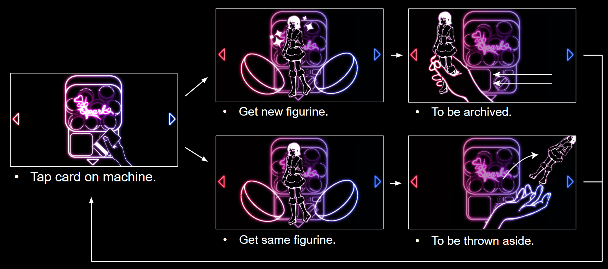
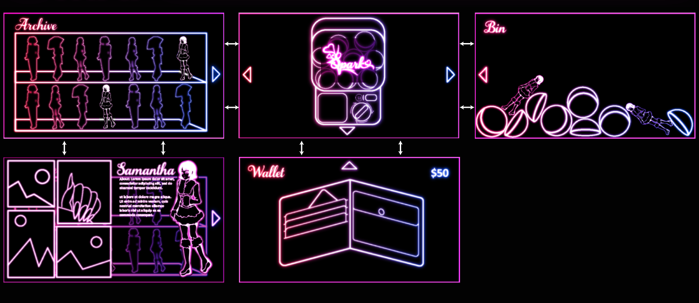

SPARK
Made with: Illustrator • Clip Studio Paint • After Effects • Premiere Pro
Spark is a speculative 2D game concept critiquing the addictive mechanics and commodification of modern dating apps. Drawing parallels between physical gachapon machines and the endless cycle of online swiping, the experience replaces human connections with collectible plastic figurines, turning potential matches into items to unlock, catalogue and discard. Players navigate a capsule machine interface alongside an archive, discard bin and wallet, each exposing a different aspect of the hidden costs of digital dating. Beneath its playful visuals and casino-inspired presentation lies a rigged system, where one final figurine remains permanently unobtainable. By trapping players in an endless pursuit of completion, Spark highlights how these platforms exploit the gambler's fallacy, prioritising continued engagement and spending over genuine human connection.

